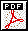
PDF version

|
 |
| ||
| Display PDF version |
|
StatViewer
StatViewer is Ixia's cross-application statistics display application. StatViewer is extensively customizable, allowing you to tailor it to your particular needs. Because it works with statistics from various Ixia applications, StatViewer provides a single consistent and familiar method for working with statistics from multiple applications.
Figure A-1. StatViewer
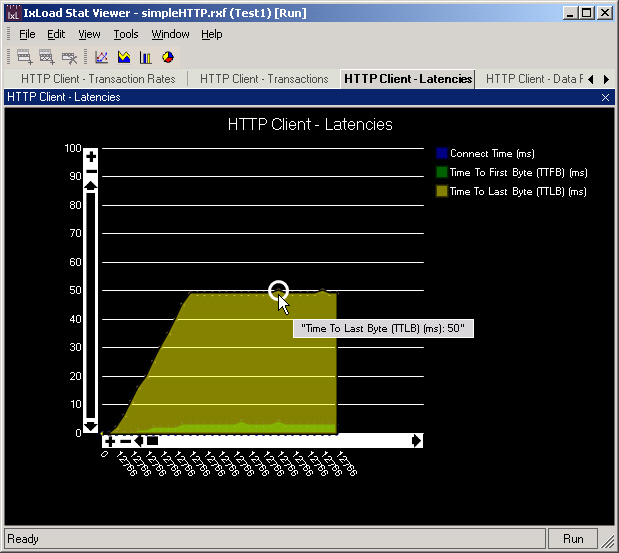
About Views
In StatViewer, a view is a tab that displays a statistics graph in the StatViewer main window. Each view has one or more statistics defined for it. Each view also includes items such as a title that identifies it, a legend that lists the color used for each statistic, and for the graphs, controls that allow you to change the scales on the x- and y-axes. The views available, the statistics defined for them, and their properties are stored in the applications' repositories (Figure A-2).
Figure A-2. StatViewer and application repository
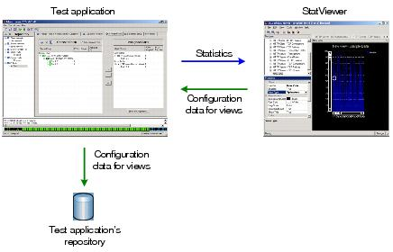
To display a view, you can:
Every application that uses StatViewer defines its own set of views and statistics. You cannot change the properties of those pre-defined views or add or remove statistics from them. The only option available for pre-defined views is controlling whether they are active or not, which is controlled by the Enabled property in the View category of the Properties list. If you set View Enabled to false, the view displays in the main window but does not graph any statistics. If Locked by app displays at the top of the Properties pane, that indicates that you cannot change the view's properties, other than to make it active or inactive.
You can create your own views, and define the statistics they display. For views you create and their statistics, you can set all the available properties, such as background color, line style, title, and so on.
Run mode vs. Design mode
StatViewer has two modes: Run mode and Design mode.
Run mode (Figure A-1) is the mode you use to display and manipulate statistics generated by the application. In Run mode, you can click on the various tabs to view the different statistics groups defined for the application, you can change the X- and Y-axes to increase or decrease the scales shown on graphs, and you can move the cursor over the lines, bars, or pie-view slices to display detailed information about the statistics the specific point underneath the cursor.
Design mode (Figure A-4) is the mode you use to change the properties of existing statistics or define the properties of new statistics. If StatViewer is in Design mode and you begin a test, the testing application automatically switches StatViewer into Run mode.
Run mode
Figure A-3. StatViewer (Run mode)
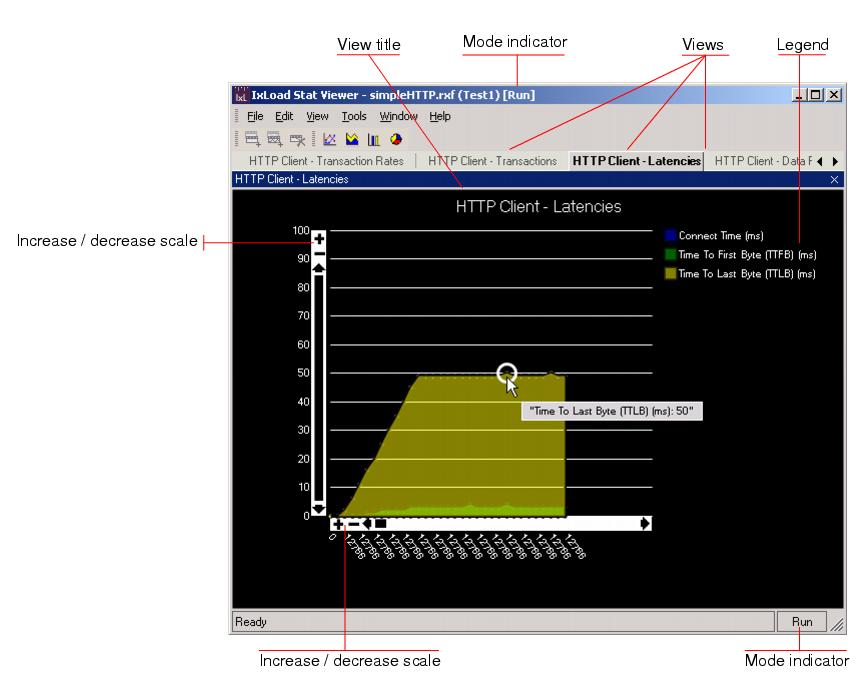
Design mode
Figure A-4. StatViewer (Design mode, with design controls shown)
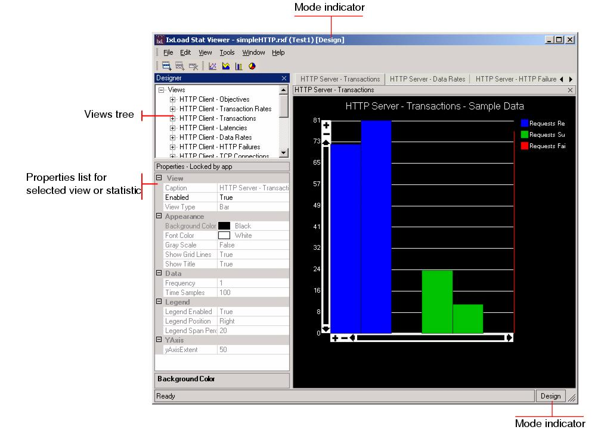
View Types
StatViewer can display statistics in seven types of views: line, area, bar, pie (Figure A-5), spline, spline area, and grid (Figure A-6). To change the type of view, click one of the View Type buttons in the toolbar (Figure A-7) or change the View Type property (see Editing a View on page A-23).
Figure A-5. View Types
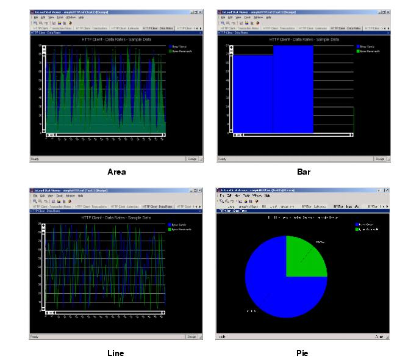
Figure A-6. View Types (continued)
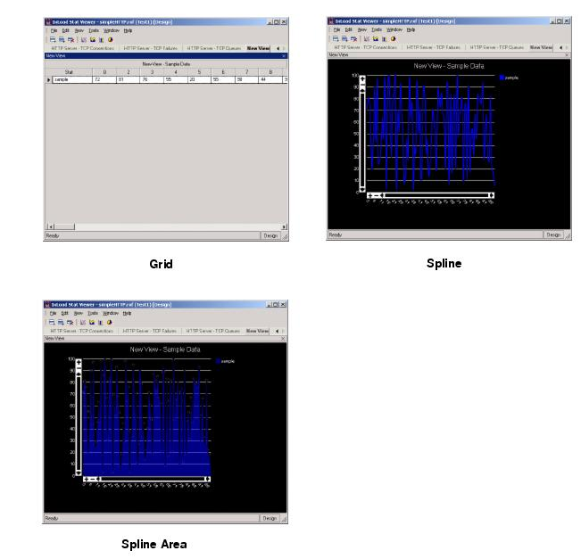
Figure A-7. View Type buttons on menubar
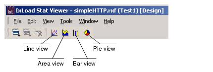
Using the Scale Controls
On all the views except for the pie and the grid, you can increase or decrease the magnification of the scales and pan the scales up and down (y-axis) or left and right (x-axis) through the data. Changing the magnification of the scales increases or decreases the range of values shown on the scales. Panning enables you to move the scale over the entire range of data.
Figure A-8. Scale controls
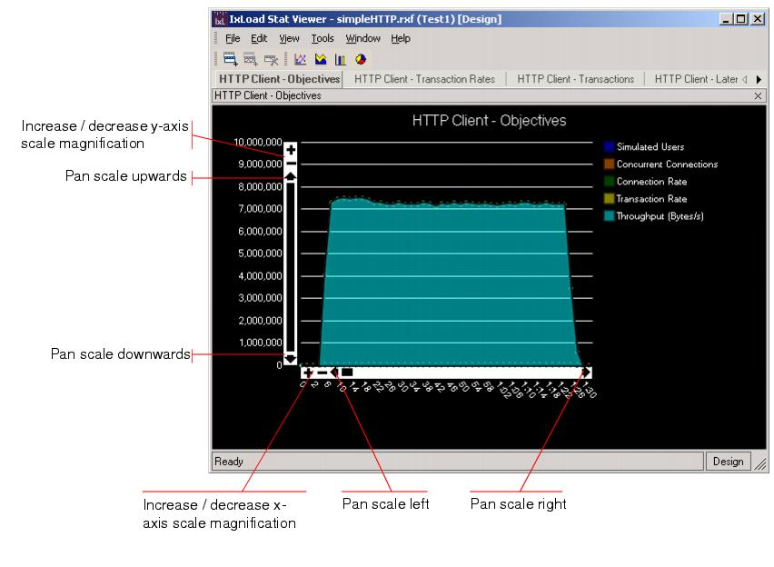
Magnifying the scales spreads the number of scale divisions over a wider area, making it easier to see small changes in data. Decreasing the scales shrinks the scale divisions into a smaller area, displaying the statistics in a smaller space, making it easier to view a large amount of data all at once, for a `big-picture' view of the statistics.
For example, in the upper view in Figure A-9, the vertical scale spans the entire length of the tallest blue bar. In the lower view, the magnification of the scale has been reduced so that it only spans approximately one-quarter of the data. Note how much more space there is between the scale divisions. To view all the data using this magnified scale, you would click on the arrows to move (pan) the scale over the entire amount of statistical data.
To increase the magnification of a scale, click the plus (+) icon. To decrease the magnification of a scale, click the minus (-) icon.
Panning is useful when the window is too small to display all the data on the scales and you do not want to reduce the scales.
To pan through the statistics, click one of the vertical arrows to move the scale through the data on the x-axis or one of the horizontal arrows to move the scale through the data on the y-axis.
Figure A-9. Increasing scale magnification
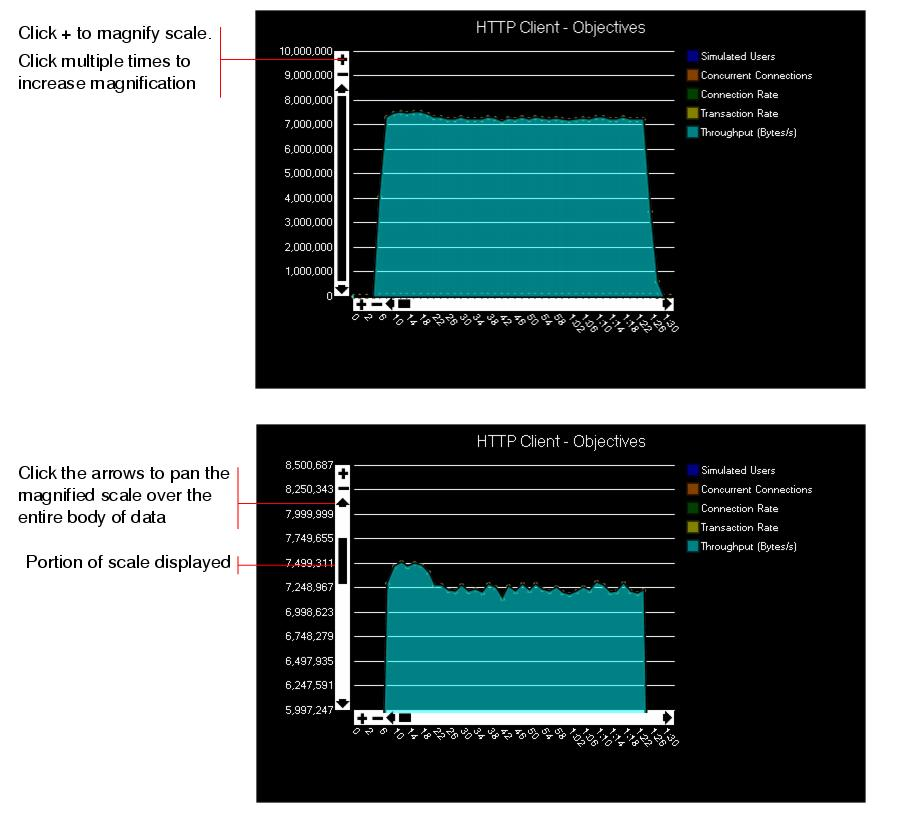
Mouse-over
When you move the cursor over any point of graphed data in a view, StatViewer highlights the line, bar, area, or slice (pie) beneath the cursor and displays a caption that identifies the source of the statistic and a numerical value.
On views that graph totals (number of users, number of pages, and so on), the caption indicates the total for that statistic.
On views that graph rates (bytes per second, connections per user, and so on), the caption indicates the rate at the point on the graph underneath the cursor.
Figure A-10. Caption showing highlighted statistic and value
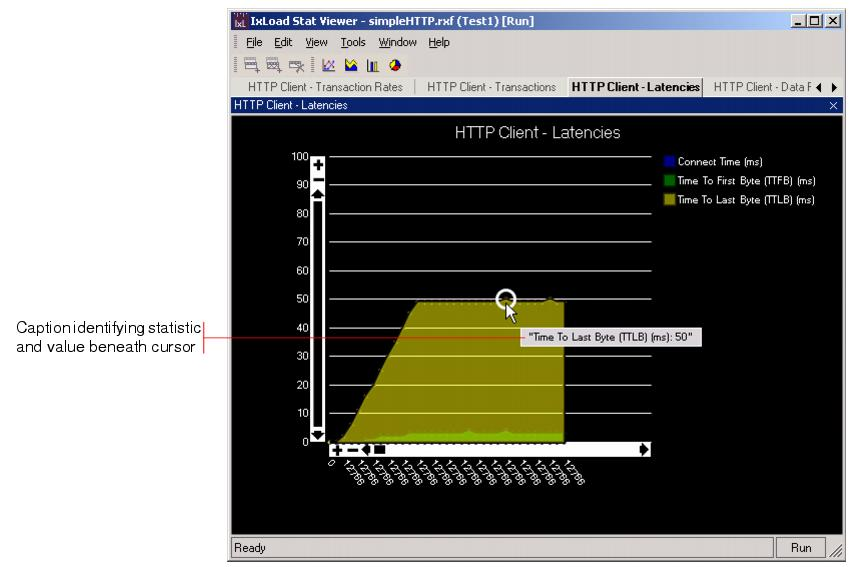
Dragging and Docking Views
Dragging and docking refer to moving (dragging) a view from StatViewer's main window or tabs and either establishing it in its own window or re-aligning it along one of the main window borders (docking).
Dragging a View to a Separate Window
To drag a view into a separate window, you can either:
Returning a View to the Main Window
To return a view from a separate window to the main window, place the cursor in the view window's title bar, hold down the right mouse button, then drag the view into the StatViewer main window.
Figure A-12. Returning a view to the main window
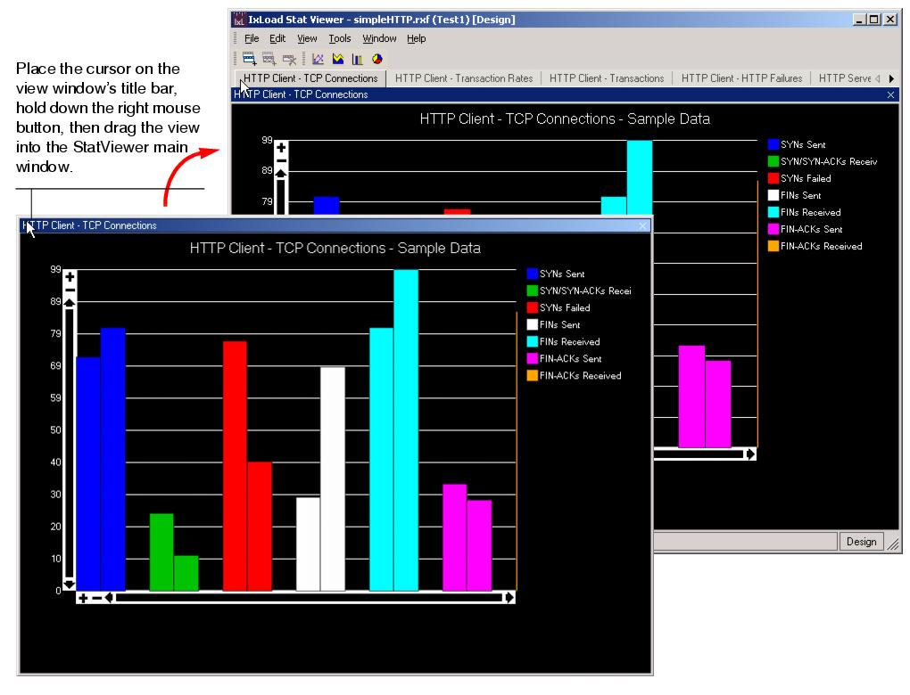
Docking a View Along the Left or Right Border
To dock a view along the left or right border of the main window:
- Place the cursor on the view's title bar, hold down the right mouse button and drag the view towards the border you want to align the views along (Figure A-13).
- When the cursor is above the left or right border, the release the mouse button.
- To dock additional windows, drag them to the same border.
- To return a view to its original position, drag the title bar back to its original position (Figure A-14).
Figure A-13. Docking a view along the right border
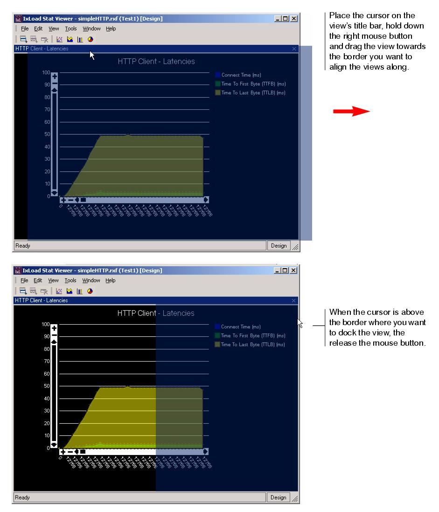
Figure A-14. View docked along the right border
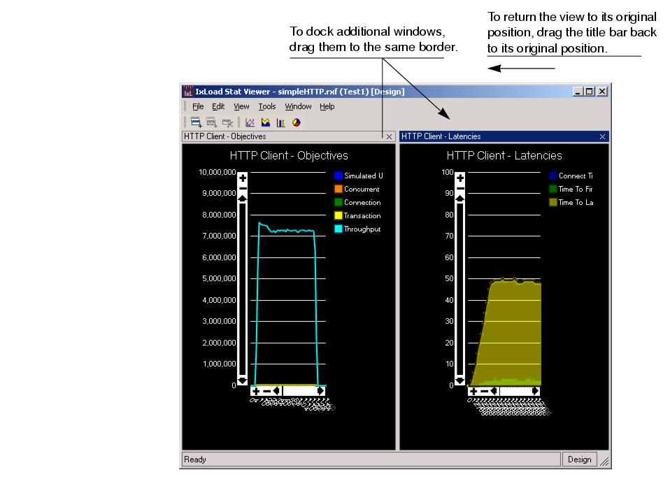
Docking a View Along the Bottom Border
To dock a view along the bottom border:
- Place the cursor on the view's title bar, hold down the right mouse button and drag the view towards the bottom of the main window (Figure A-15).
- When the cursor is above the bottom border, release the mouse button.
- To dock additional windows, drag them to the same border (Figure A-16).
- To return the view to its original position, drag the title bar back to its original position.
Figure A-15. Docking a view along the right border
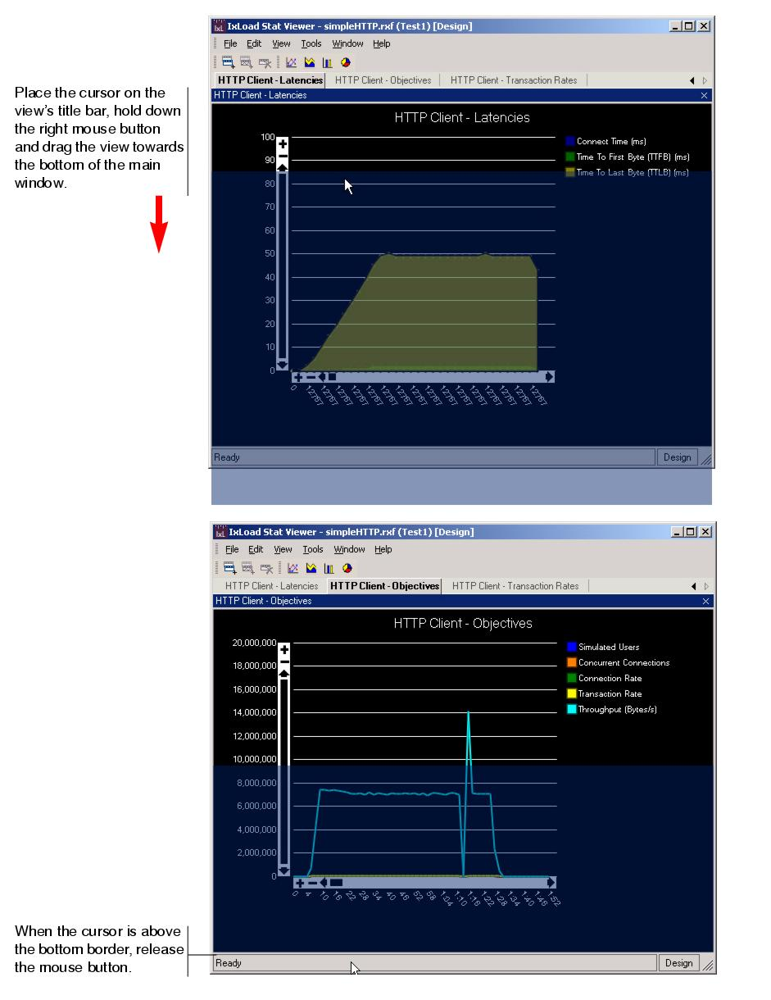
Figure A-16. View docked along the bottom border
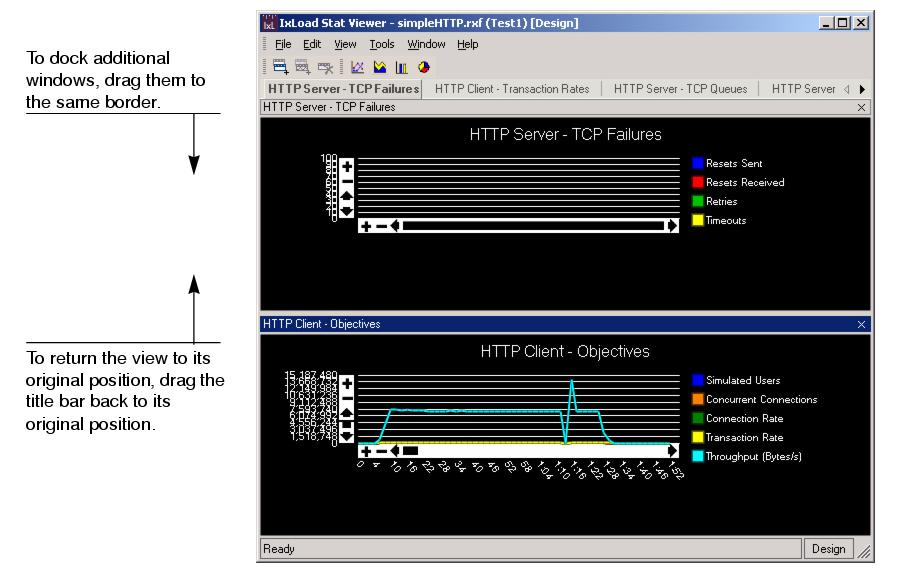
Designing Views
StatViewer contains all the controls you need to create or edit views. When StatViewer is in Run mode (meaning that it is receiving statistics from an application and graphing them), you can edit some of the cosmetic properties of views, such as line styles, colors, and other similar properties. The application sending statistics to StatViewer automatically places it into Run mode before it begins sending statistics. When it is finished sending statistics, it switches StatViewer back into Design mode.
When StatViewer is in Design mode, you can change all the properties of existing views you have created (and their statistics) and add new views. To add or modify views, you use StatViewer's design controls. The design controls display in two additional panes to the left of the main window (Figure A-17). The Views pane lists the views defined, and the statistics defined for them. The Properties pane lists the properties of the selected view or statistic.
Every applications that uses StatViewer defines its own set of pre-configured views and statistics. You cannot change the properties of the pre-configured views or their statistics, or add or remove statistics from them. If Locked by app displays at the top of the Properties pane, that indicates that you cannot change the view's or statistic's properties, other than to make it active (graphing incoming statistics) or inactive. The View Enabled property controls whether a view is active or inactive.
For views you create and the statistics you add to them, you can set all the available properties, such as background color, line style, title, and so on.
Figure A-17. StatViewer Design Controls
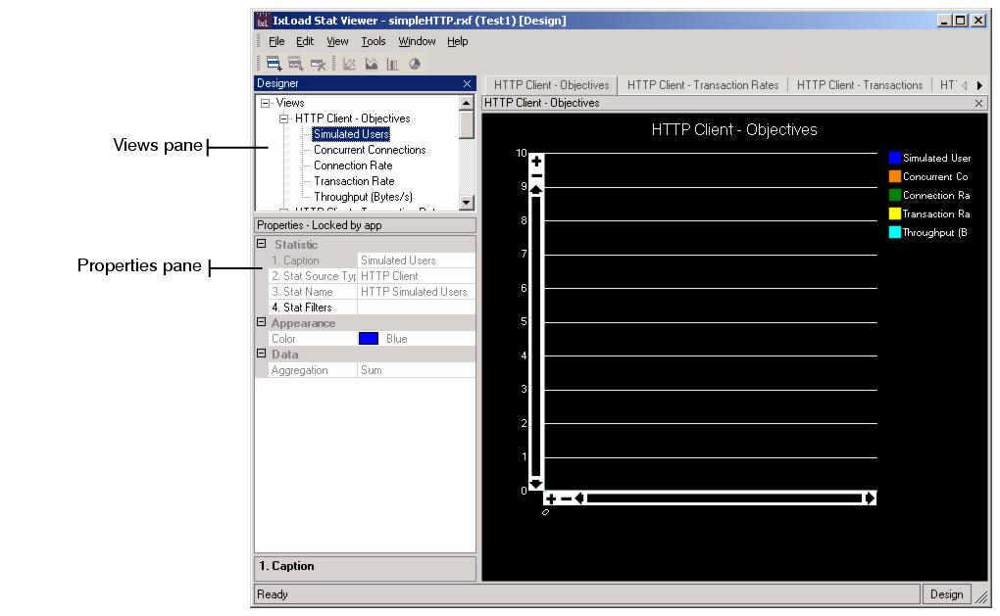
Displaying the Design Controls
The design controls are the controls that you use to create or edit views and their statistics. To display the design controls, choose View | Design from the menubar.
Adding a View
If you want to create a graph that shows a specific set of statistics, add a view. When you add a view, you:
To add a view:
StatViewer adds a new view to the bottom of the View tree with a default set of properties. The graph shows how it will appear using the default properties.
- Configure the view's properties. Table A-1 describes the parameters.
- Once you have configured the view's properties, add statistics to it. See Adding a Statistic on page A-24.
Figure A-19. New View Added
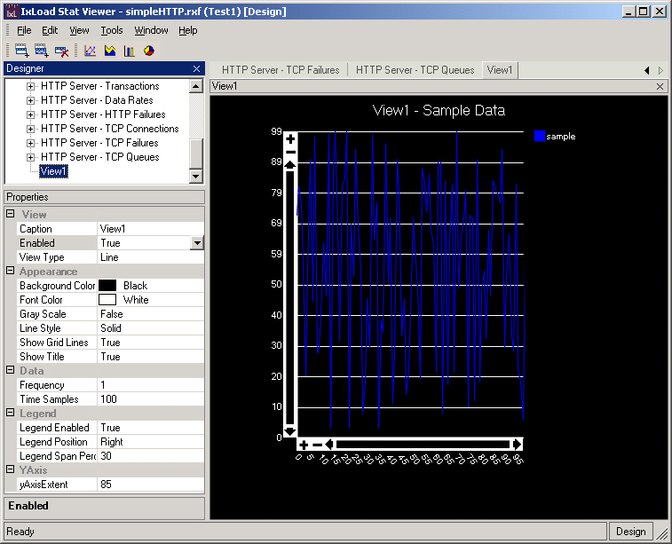
Editing a View
When you edit a view, you can:
To edit a view:
- If the design controls are not already displayed, choose View | Design from the menubar.
- In the Views tree, select the view you want to edit.
In the Properties pane, StatViewer displays the properties for the view (Figure A-20).
- Configure the view's properties. Table A-1 describes the parameters.
Figure A-20. View selected in Properties pane
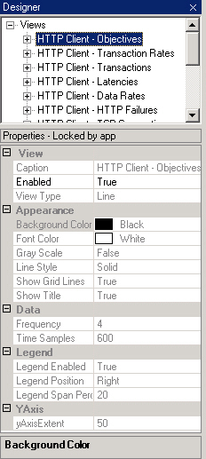
Deleting a view
Adding a Statistic
After you have added a new view, you must add statistics to it. You can also add new statistics to existing views.
To add a statistic:
- If the design controls are not already displayed, choose View | Design from the menubar.
- Select the view you want to add the statistic to.
- In the title bar, click the Add Statistic button.
Figure A-22. Add Statistic button
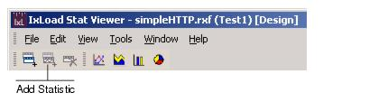
StatViewer adds a new statistic to the View with default properties.
- Configure the statistic's properties. Table A-1 describes the parameters.
Figure A-23. Statistic added to view
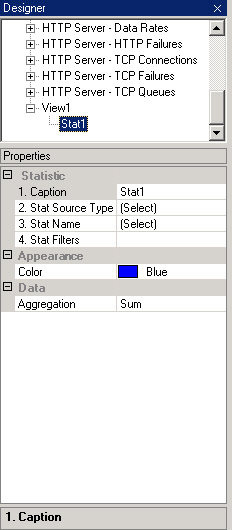
- Click the button in the Stat Filters field.
StatViewer displays the Filter List window (Figure A-24).
- Select a filter in the Available pane, then click the >> button to move it to the Selected pane.
- To remove a filter, select it in the Selected pane, then click the << button to move it back to the Available pane.
- Click OK when you have finished selecting filters.
Figure A-24. Filter List window
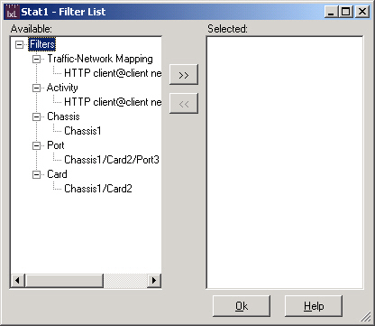
Event Log
The event log (Figure A-25) displays messages related to StatViewer's operation. The event log can be a useful diagnostic tool in the event you encounter a problem using StatViewer.
To display the event log, select Tools | Event Log from the menubar.
Setting the Logging Level
You can set the severity of messages that the event log stores. Each logging level also records the more-severe messages from the levels beneath it. The levels are:
None disables event logging; no messages will be stored in the event log.
Errors records events that may cause data to be lost, corrupted, or not retrieved. This setting will normally record the smallest number of messages.
Warnings records events that may impair StatViewer's operation but not affect the statistics it displays. This setting also records Errors.
Information records normal events that occur during StatViewer operation. This setting also records Errors and Warnings.
Exporting the Event Log
You can export the contents of the event log as either text or comma-separated values (CSV). To export the log file, click the Export button, then select a file name and format.
Figure A-25. Event Log
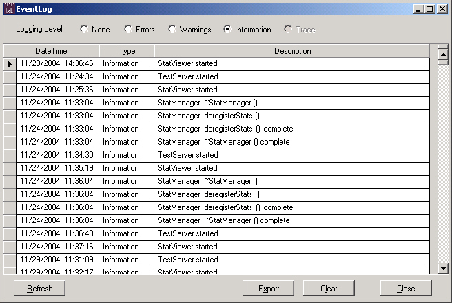
Clearing the Event Log
To purge the messages currently stored in the event log, click the Clear button.
Refreshing the Event Log
When you open the event log, it displays the messages it contains at the time you open it. While you are viewing the event log, new messages may be added to the event log file; these new messages are not displayed in the event log window. To see any new messages that have arrived after you opened the event log, click the Refresh button.
Setting the Event Log Properties
StatViewer's event log runs as a Windows event viewer. To configure its properties such as its maximum size and how often it overwrites its oldest messages, you use the same procedures as for the standard Windows event viewers.
To configure the event log's properties:
- Open Windows' Control Panel, then double-click Administrative Tools to open it.
- Double-click the Event Viewer, to open it.
StatViewer displays in the list of event viewers.
Figure A-26. StatViewer in list of Windows Event Viewers
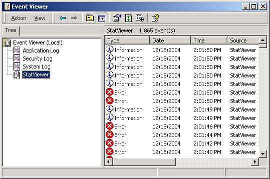
- Select StatViewer, then right-click and select Properties.
Windows displays the list of properties available for StatViewer's event log.
- Configure the StatViewer event log's properties.
Figure A-27. StatViewer event log properties
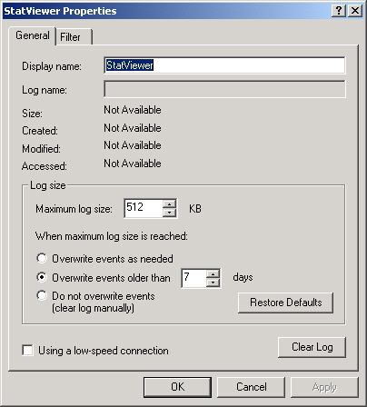
|
|
Did this document answer your question?
If not, let us know! |
|